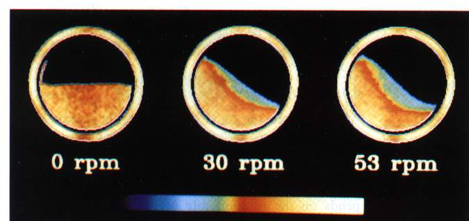
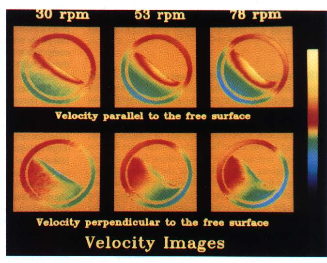
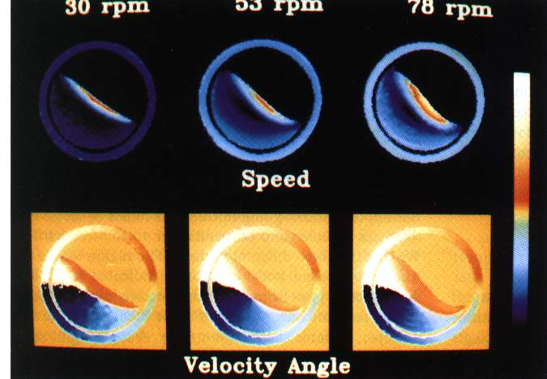

Concentration images of mustard seeds flowing in a half-filled cylinder at rotation speeds
of 0, 30, and 53 rpm. The reference ring contains solidly paccked seeds which do not flow.
The white end of the color bar corresponds to the highest concentration.

Images of velocity components parallel and perpendicular to the gree surface for seeds
flowing at 30, 53, and 78 rpm in a half-filled cylinder.

Speed and angle images of flows at 30, 53, and 78 rpm. The color of the ring is uniform
and changes as a function of angular velocity W for the speed
images. On the other hand, the colors in the ring are independent of W for angle images. For the seeds undergoing rigid body rotation,
i.e., those that are not clowe to the free surface, the clors are independent not only of W but also of the distances from the center of the cylinder.